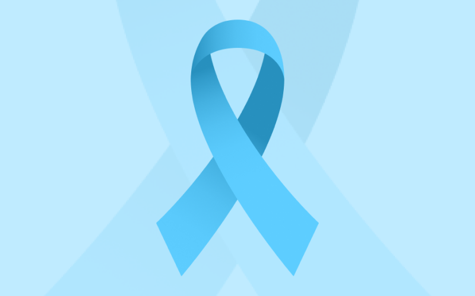
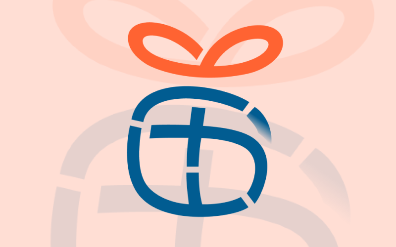
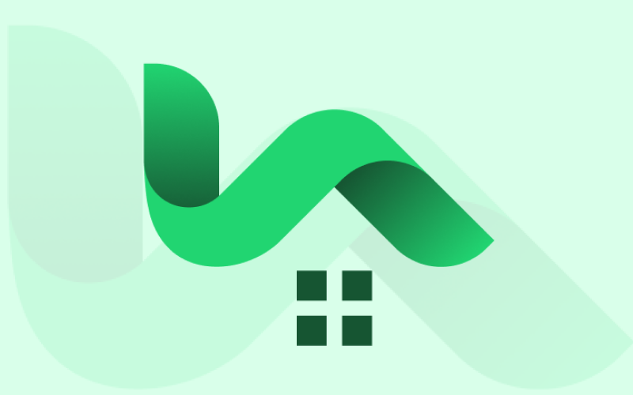
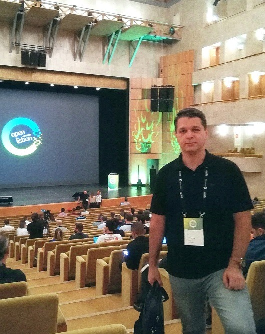

I design products that solve real problems and drive business value.
SaaS · Marketplace · B2B/B2C · Responsive Web · Mobile App · PWA · Desktop App · AI-assisted Product
Selected work
A closer look at three recent projects. In each case, a real business problem existed, and a design-led approach helped move it significantly closer to being solved.

ProGuide — turning prostate‑cancer research into a patient‑facing MVP
Built with urologic oncology specialists at the Miller School of Medicine, translating clinical and patient needs into journey maps and shippable interfaces.

Giftpals — a personalized gift‑discovery platform built for an affiliate model
Designed the flows that let users find a gift by recipient, occasion, and interest, then ran a usability audit that cut testing errors.

Houmify — turning a social network into a competitive real-estate market
Redesigned the core mechanic from open connection to parameter-based matching, so eligible agents could compete for the right client instead of just being reachable.
Career Timeline
Each role has added a new perspective to how I approach design, but one principle has remained constant: understanding real user needs, validating ideas early, and creating solutions that are both thoughtful and practical to build.
Skills & tools
- User research
- Journey mapping
- Workflow diagrams
- Design thinking
- Data-driven Analytics
- Wireframing & prototyping
- Design systems & style guides
- Usability & A/B testing
- Accessibility & gamification
- Agile / Scrum
- Cross‑functional handoff
- Stakeholder presentation
- Dev‑ready specs
- Collaboration Tools
- Figma / FigJam
- Figma AI
- Adobe XD
- Balsamiq
- Marvel App
Education & Certificates
Formal academic foundation coupled with verified professional industry specializations.
Bachelor's Degree in Computer Science
Formal engineering credentials
Google UX Design Spec.
3 Completed professional specializations
IDF Certified Professional
10 Specialized Course Certificates
UX/UI Vocational Training
Advanced Interface Engineering certification

About me
My journey in UI/UX began seven years ago. I’ve had the opportunity to design across various domains and platforms, from consulting to product design. My projects have included responsive websites, mobile apps, PWAs, Desktop apps, and SaaS-based web applications for both B2C and enterprise users. Over the years, I’ve gained solid experience working with both startups as well as corporate teams. I’ve learned how to design intuitive digital products that solve real problems, improve workflows, and create smooth user experiences, while also helping businesses grow and reach their goals. I am eager to embrace new experiences and challenges, forge connections with like-minded professionals, explore fresh opportunities, and contribute my skills to an international team.